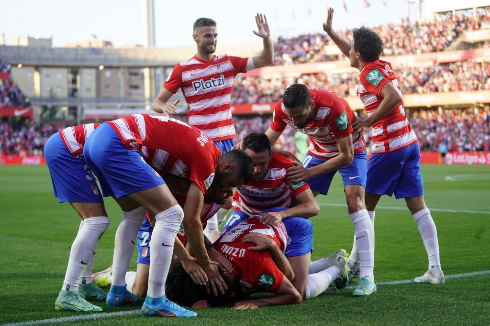

Myrto Uzuni pichichi de LaLiga SmartBank
El albanés se coloca en primer puesto de los más goleadores de LaLiga SmartBank tras marcar 2 goles contra el Sporting de Gijón.
El albanés Myrto Uzuni se ha convertido en la gran sensación del Granada CF en Segunda en este inicio de temporada.
Diez encuentros en el que el extremo ha sumado ocho goles y una asistencia con el conjunto nazarí de Aitor Karanka.
Un Granada CF que, de la mano de Karanka, no acaba de arrancar del todo en LaLiga SmartBank, donde parte como uno de los
candidatos a conseguir el ascenso a final de temporada. Un objetivo que no acaba de encarrilar, pese al sensacional inicio
de curso, con tres victorias en las tres primeras jornadas de la liga. Luego, sin embargo, llegó un camino de dudas en el
que los nazaríes sólo han sumado dos triunfos en ocho partidos, amén de otros dos empates y cuatro derrotas. Unos dientes
de sierra que hoy por hoy tienen al Granada CF en la octava posición de la tabla, fuera de los puestos con derecho a ‘play off’
una vez que finalice el campeonato regular en Segunda división.
El Granada no quiere sorpresas y no ha tardado en trabajar la renovación de Myrto Uzuni. El albanés,
que llegó el pasado mercado invernal a la ciudad de la Alhambra por tres millones de euros, rubricó su renovación
con el conjunto nazarí hasta 2026. Su gran inicio de temporada, siendo ahora mismo el pichichi de la categoría, y la
inversión que hizo el club por él ha provocado que en las oficinas de Los Cármenes no hayan tardado en atar a su estrella
ampliando su vinculación por una temporada más.
A sus 27 años, el internacional albanés es imprescindible en los esquemas de Karanka.
Partiendo de banda izquierda, su aportación al equipo en este inicio liguero se traduce en ocho goles,
siendo el pichichi de la categoría, y una asistencia, es decir, ha participado en nueve de los quince goles
que lleva el equipo nazarí. Además, el pasado mes de septiembre fue nombrado mejor jugador de Segunda División.
Uzuni tenía contrato hasta 2025, con esta ampliación estará una temporada más de rojiblanco con el objetivo de subir a Primera cuanto antes.
Nuevas ilusiones, nuevas camisetas, un mismo sentimiento
Ya han salido a la venta las nuevas camisetas deel Granada CF de la temporada 2022/2023
Las nuevas equipaciones para la campaña 2022/23 cuentan con adidas como nuevo partner deportivo del Club y recogen estilo
y diseños exclusivos, sin olvidar los colores granadistas y el valor de la afición.
El Granada CF y adidas presentan las equipaciones para la temporada 2022/23, unas elásticas completamente
renovadas fruto de la nueva alianza entre la Entidad y la multinacional que han apostado por la exclusividad
que ofrece una firma como adidas sin renunciar al sentimiento de #EternaLucha del equipo nazarí.
Presentacion de camisetas del Granada CF
El Granada CF golea en casa al Gijon
El Granada golea por cinco goles a cero al Sporting de Gijon en la pasada jornada
De esta manera se reencuentra el Granada con la victoria. De nuevo en su casa, la escuadra granadina regresa
a los puestos de 'playoff' de ascenso y se coloca con diecisiete unidades y en quinto lugar. Las plazas de
ascenso directo quedan a dos puntos y liderato que ostenta Las Palmas, a tres.
En una jornada intersemanal, tanto Granada como Sporting buscaron dar frescura a las piernas de algunos
jugadores debido a que, por ejemplo, tan solo transcurrirán 72 horas hasta el próximo partido de los nazaríes,
que viajan el sábado hasta Tenerife.

Comienza la liga en segunda división